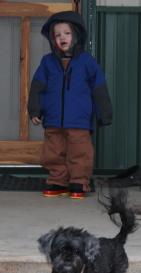
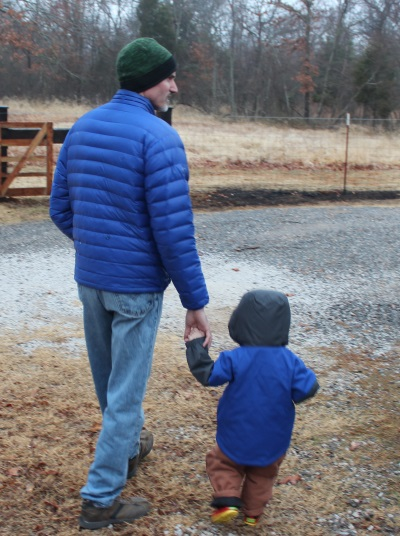
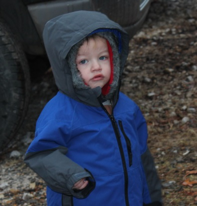
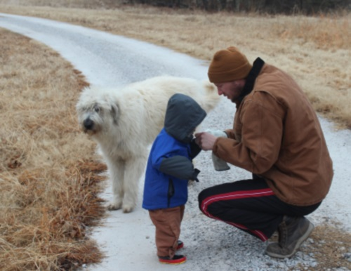
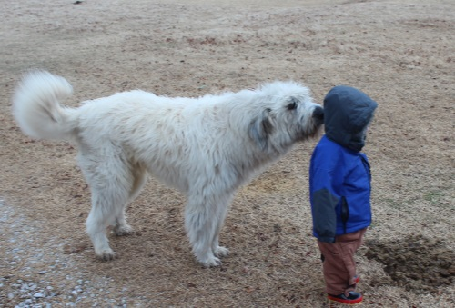
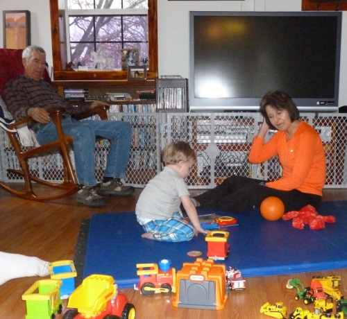
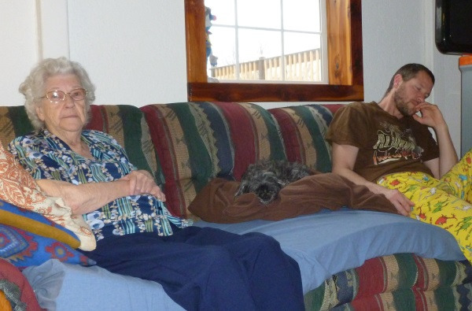
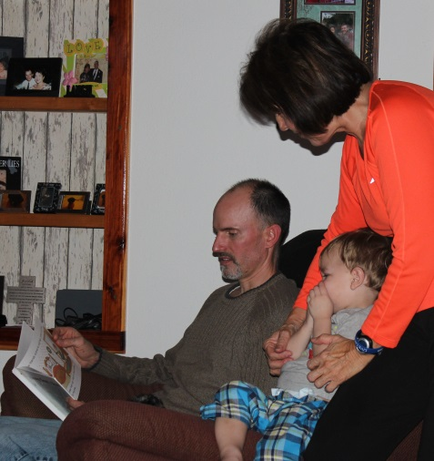

February 1 - 2, 2014
| The Morton family descended onto the Bloomer
Ranch for a weekend of being entertained by Brodie. We had a great
time despite the nasty weather. Brodie has enough energy to keep all
7 of us adults busy! |
|
 |
 |
| We are 'outdoor people' - especially Brodie, so we didn't let the nasty weather keep us indoors. |
Uncle Eric & Brodie blaze the trail |
  |
|
| Cute face | Dad tucking his hands into his sleeves for warmth (we couldn't find his
gloves) Don't tell MeMaw - she can't bear the thought of any part of him ever getting cold! |
|
 Scruffy sniffing his boy, while Brodie checks out the ancient cow patty |
|
|
 PePaw and MeMaw brought Gran and a big lunch over for us all to enjoy. |
|
|
 This couch was made for snoozing. Gran is tired, Prisser is dreaming, and Keith is drifting off. |
|
|
 |
|
| MeMaw is a GREAT playmate, she has as much energy as Brodie! |
Uncle Eric tries to head off an attack of fussy-pants by reading a
good book. Turns out, a nap did the trick! |